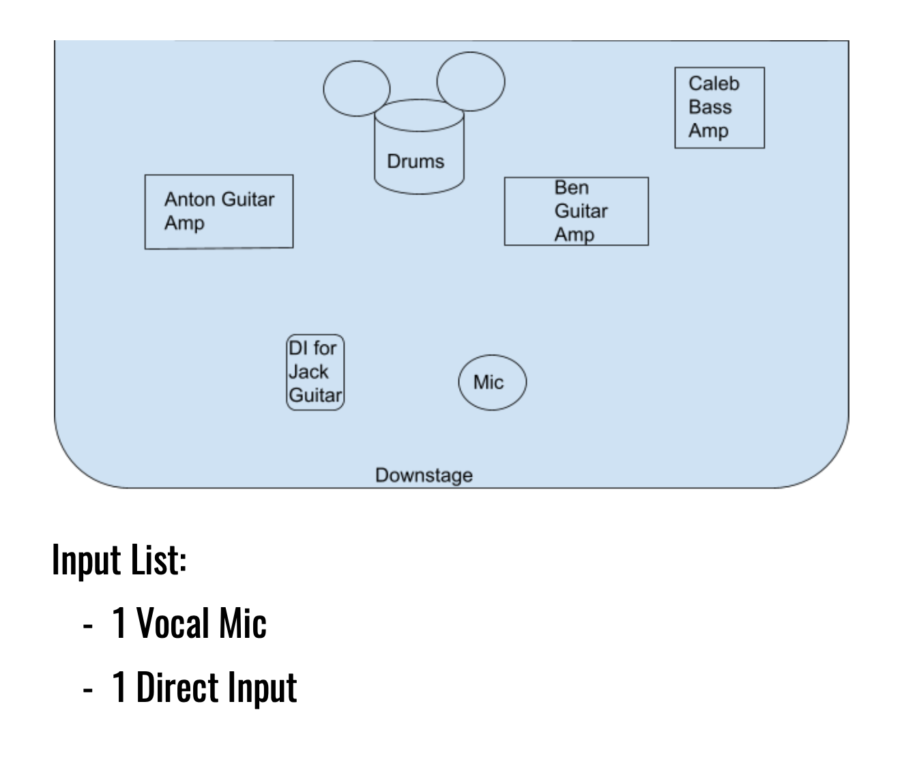

Press Kit
Planet of the Little Green Men
Since forming in late 2021, Planet of the Little Green Men has grown a commited fan base throughout New Orleans. After releasing their debut single "Arrival / Monster in Your Head" they have been able to reach audiences in Europe, South America, and Australia as well.
Stats
"Arrival / Monster in Your Head" has reached 4,920 stream on Spotify alone: 2,507 stream of "Monster in Your Head" and 2,413 stream of "Arrival"! Among these stream are their 95 Spotify folowers. They have 83 monthly streams.
Releases
Below are the band's only two officially released songs. Look out for some releases coming your way very soon...
Videos
The band continues to record and release the majority of their shows on their YouTube account. Here are some examples of the band's live sound in differing venues:
Photos
Below are an assortment of photos from an early 2023 photo shoot and some live shows:

Biographies
Here are two possible choices for a biography. One is for brief descriptions and the other is the band's full length biography.
Short Bio
Like a sentient blob, hell-bent on the feed, oozing out of the neon streets of New Orleans come Planet of the Little Green Men. Kaleidoscopic layers of wailing guitar scream, pulsating and wavering rhythms stacked on top of blistering ear candy that could only be described as a new triumph on classic psychedelia. LGM are no strangers to the psychic connection between music and being, in fact it's what they strive to manifest and produce. With members birthed all across north and central America, LGM's sound and influences are as diverse and inspired as its members. There is no sound LGM will not have their shot at, and no one is safe from their infectious, psychedelic output. The wrath of outer space is here!
Long Bio
While attending Loyola University New Orleans, four students (including current members Ben Heil and Hunter Croft) began forming the psychedelic rock experience that is Planet of the Little Green Men. Influenced by bands like King Gizzard and the Lizard Wizard and Osees, the group jammed through rough ideas until they became polished, intricate songs. Combining elements of fantasy imagery and experimental music, they were able to refine their sound into what it can be heard as today. After almost a year the band was able to release their debut single, "Arrival / Monster in Your Head" on all major streaming platforms. It has had a positive reception, with listeners spanning from New Orleans Parish to Hungary and Belize.
The band's personnel have come from all over the United States and internationally, but changes throughout their history have led the band to be characterized by their current members. The band's voice, Benjamin Heil, pairs his whimsical vocal style with blaring, reverberated lead guitar lines. Jack Owen lays down majestic, silky guitar solos and harmonizes over the lead guitar of fellow guitarist Anton Alvarez, who's playing can be distinguished by the roaring echoes that fill the surrounding area. None of these elements would be as effective, however, without the wrecking crew that is the band's bass and drums. Hunter Croft's drumming transforms the music into a powerful machine that can only be maintained by its engineer Caleb Hedemark, who's chugging bass ties all parts into LGM's sound. The band continues to constantly write and play their music, and support this through live shows with other local artists. Additionally, they are currently recording their first full length album, which will contain the recently released tracks along with many others that encompass their current sound.
Press Quotes
The band has received a few reviews from local publications. Here are a couple examples:
OffBeat Magazine
"Psychedelic acid rock with Cake-esque talk-singing to aggressive punk shouting and speed without sacrificing the high-fidelity instrumentation much like British experimental rock band Black Midi." - Dalton Spangler
Loyola Maroon
"It's a lot of weird elements meshed together that sounds really fucking good"
"The genre-bending experience was immaculate."
Performance Calendar
Our performance calendar can be found right here on our website: Shows
Social Media


Stage Plot
Contact
Personell
Ben Heil: bwheil@my.loyno.edu
Jack Owens: jsowen@my.loyno.edu
Caleb Hedemark: cjhedema@my.loyno.edu
Anton Alvarez: agalvare@my.loyno.edu
Hunter Croft: hdcroft@my.loyno.edu
Booking/Management
Diego Gutierrez: dgutierrez.mgmt@gmail.com + 415-235-7510